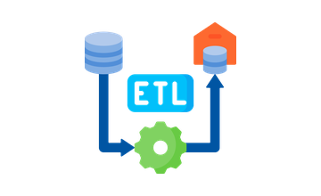
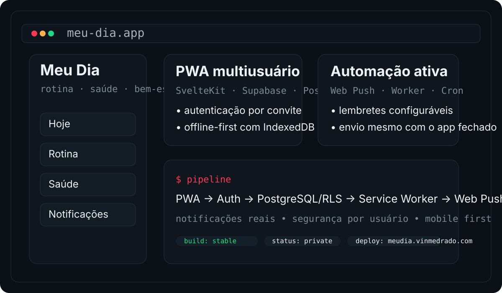
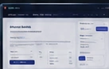
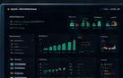

Stack usada em automação, ETL, BI, RPA, APIs e produtos internos.
 PythonAutomação / ETL
PythonAutomação / ETL SeleniumAutomação Web
SeleniumAutomação Web Power AutomateWorkflows / RPA
Power AutomateWorkflows / RPA VBAExcel / Sistemas
VBAExcel / Sistemas Power BIDAX / Modelagem
Power BIDAX / Modelagem SQLDados / ETL
SQLDados / ETL
ETLPipelines FastAPIBackend / APIs
FastAPIBackend / APIs PostgreSQLBanco de Dados
PostgreSQLBanco de Dados DockerInfra / Deploy
DockerInfra / Deploy ML / OCRIDP / Modelos
ML / OCRIDP / ModelosNúmeros do currículo — resultados ligados a entregas reais.
Histórico profissional completo — sem esconder a progressão.

- 97% de redução no relatório diário de NPS: 13 min → 20 s com Python.
- Recuperação de 4 scorecards de Customer Experience; modelo Power BI de 158 MB → 56 MB.
- Validação automática pré-carga antes de Dataflows e modelos semânticos BR + South America.
- Automações sob demanda com Google Apps Script, VBA, OCR e integração com API do Mercado Livre.
- Pipeline de projetos mantido ativo durante a transição entre contratos corporativos.

- 5.000+ notas fiscais processadas em um mês sem erro no SAP.
- Sistema Access/VBA integrado a Outlook e SAP-MM para recebimento fiscal.
- 81% de redução na validação de processos: 3 min → 34 s com Python + Oracle CRM + OCR/IDP + Outlook.
- 280 testes automatizados aprovados no Process Validation e motor documental com Human-in-the-Loop.

- Baixa de 20.000+ notas fiscais de importação de veículos e notas de serviço via sistema interno e SAP-MM.
Destaques que melhor representam engenharia, automação e dados. O Explorer mantém o restante.
Meu Dia
NEW · PWA / FULL STACKPWA pessoal multiusuário com SvelteKit, Supabase Auth, PostgreSQL, suporte offline, Web Push e funcionamento real em celular.

Ver projeto →Applymize
AUTOMAÇÃOPlataforma para automação de candidaturas com integração entre vagas, dados, processos e análise de resultados.

Ver projeto →VinanceOS
DADOS / MLPlataforma full stack para recomendação, explicabilidade, auditoria, monitoramento e pesquisa quantitativa.

Ver projeto →Football Decision Lab
ML / MLOPSPipeline de pesquisa e operação paper com validação temporal, backtesting, modelo champion congelado e settlement automático.
Automação, dados e sistemas — currículo completo em PDF.
Santo André/SP · experiência corporativa em GM Brasil / Stellantis · projetos autorais em produção e demos públicas.
GitHub: /vinmedrado